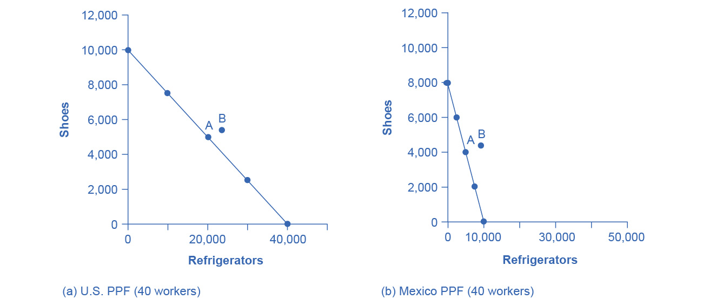

19.2 What Happens When a Country Has an Absolute Advantage in All Goods
Learning Objectives
By the end of this section, you will be able to:
- Show the relationship between production costs and comparative advantage
- Identify situations of mutually beneficial trade
- Identify trade benefits by considering opportunity costs
What happens to the possibilities for trade if one country has an absolute advantage in everything? This is typical for high-income countries that often have well-educated workers, technologically advanced equipment, and the most up-to-date production processes. These high-income countries can produce all products with fewer resources than a low-income country. If the high-income country is more productive across the board, will there still be gains from trade? Good students of Ricardo understand that trade is about mutually beneficial exchange. Even when one country has an absolute advantage in all products, trade can still benefit both sides. This is because gains from trade come from specializing in one’s comparative advantage.
Production Possibilities and Comparative Advantage
Consider the example of trade between the United States and Mexico described in Table 19.7. In this example, it takes four U.S. workers to produce 1,000 pairs of shoes, but it takes five Mexican workers to do so. It takes one U.S. worker to produce 1,000 refrigerators, but it takes four Mexican workers to do so. The United States has an absolute advantage in productivity with regard to both shoes and refrigerators; that is, it takes fewer workers in the United States than in Mexico to produce both a given number of shoes and a given number of refrigerators.
Table 19.7 Resources Needed to Produce Shoes and Refrigerators
Absolute advantage simply compares the productivity of a worker between countries. It answers the question, “How many inputs do I need to produce shoes in Mexico?” Comparative advantage asks this same question slightly differently. Instead of comparing how many workers it takes to produce a good, it asks, “How much am I giving up to produce this good in this country?” Another way of looking at this is that comparative advantage identifies the good for which the producer’s absolute advantage is relatively larger, or where the producer’s absolute productivity disadvantage is relatively smaller. The United States can produce 1,000 shoes with four-fifths as many workers as Mexico (four versus five), but it can produce 1,000 refrigerators with only one-quarter as many workers (one versus four). So, the comparative advantage of the United States, where its absolute productivity advantage is relatively greatest, lies with refrigerators, and Mexico’s comparative advantage, where its absolute productivity disadvantage is least, is in the production of shoes.
Mutually Beneficial Trade with Comparative Advantage
When nations increase production in their area of comparative advantage and trade with each other, both countries can benefit. Again, the production possibility frontier is a useful tool to visualize this benefit.
Consider a situation where the United States and Mexico each have 40 workers. For example, as Table 19.8 shows, if the United States divides its labor so that 40 workers are making shoes, then, since it takes four workers in the United States to make 1,000 shoes, a total of 10,000 shoes will be produced. (If four workers can make 1,000 shoes, then 40 workers will make 10,000 shoes). If the 40 workers in the United States are making refrigerators, and each worker can produce 1,000 refrigerators, then a total of 40,000 refrigerators will be produced.
Table 19.8 Production Possibilities before Trade with Complete Specialization
As always, the slope of the production possibility frontier for each country is the opportunity cost of one refrigerator in terms of foregone shoe production–when labor is transferred from producing the latter to producing the former (see Figure 19.4).

Figure 19.4 Production Possibility Frontiers (a) With 40 workers, the United States can produce either 10,000 shoes and zero refrigerators or 40,000 refrigerators and zero shoes. (b) With 40 workers, Mexico can produce a maximum of 8,000 shoes and zero refrigerators, or 10,000 refrigerators and zero shoes. All other points on the production possibility line are possible combinations of the two goods that can be produced given current resources. Point A on both graphs is where the countries start producing and consuming before trade. Point B is where they end up after trade.
Let’s say that, in the situation before trade, each nation prefers to produce a combination of shoes and refrigerators that is shown at point A. Table 19.9 shows the output of each good for each country and the total output for the two countries.
Table 19.9 Total Production at Point A before Trade
Continuing with this scenario, suppose that each country transfers some amount of labor toward its area of comparative advantage. For example, the United States transfers six workers away from shoes and toward producing refrigerators. As a result, U.S. production of shoes decreases by 1,500 units (6/4 × 1,000), while its production of refrigerators increases by 6,000 (that is, 6/1 × 1,000). Mexico also moves production toward its area of comparative advantage, transferring 10 workers away from refrigerators and toward production of shoes. As a result, production of refrigerators in Mexico falls by 2,500 (10/4 × 1,000), but production of shoes increases by 2,000 pairs (10/5 × 1,000). Notice that when both countries shift production toward each of their comparative advantages (what they are relatively better at), their combined production of both goods rises, as shown in Table 19.10. The reduction of shoe production by 1,500 pairs in the United States is more than offset by the gain of 2,000 pairs of shoes in Mexico, while the reduction of 2,500 refrigerators in Mexico is more than offset by the additional 6,000 refrigerators produced in the United States.
Table 19.10 Shifting Production Toward Comparative Advantage Raises Total Output
This numerical example illustrates the remarkable insight of comparative advantage: even when one country has an absolute advantage in all goods and another country has an absolute disadvantage in all goods, both countries can still benefit from trade. Even though the United States has an absolute advantage in producing both refrigerators and shoes, it makes economic sense for it to specialize in the good for which it has a comparative advantage. The United States will export refrigerators and in return import shoes.
How Opportunity Cost Sets the Boundaries of Trade
This example shows that both parties can benefit from specializing in their comparative advantages and trading. By using the opportunity costs in this example, it is possible to identify the range of possible trades that would benefit each country.
Mexico started out, before specialization and trade, producing 4,000 pairs of shoes and 5,000 refrigerators (see Figure 19.4 and Table 19.9). Then, in the numerical example given, Mexico shifted production toward its comparative advantage and produced 6,000 pairs of shoes but only 2,500 refrigerators. Thus, if Mexico can export no more than 2,000 pairs of shoes (giving up 2,000 pairs of shoes) in exchange for imports of at least 2,500 refrigerators (a gain of 2,500 refrigerators), it will be able to consume more of both goods than before trade. Mexico will be unambiguously better off. Conversely, the United States started off, before specialization and trade, producing 5,000 pairs of shoes and 20,000 refrigerators. In the example, it then shifted production toward its comparative advantage, producing only 3,500 shoes but 26,000 refrigerators. If the United States can export no more than 6,000 refrigerators in exchange for imports of at least 1,500 pairs of shoes, it will be able to consume more of both goods and will be unambiguously better off.
The range of trades that can benefit both nations is shown in Table 19.11. For example, a trade where the U.S. exports 4,000 refrigerators to Mexico in exchange for 1,800 pairs of shoes would benefit both sides, in the sense that both countries would be able to consume more of both goods than in a world without trade.
Table 19.11 The Range of Trades That Benefit Both the United States and Mexico
Trade allows each country to take advantage of lower opportunity costs in the other country. If Mexico wants to produce more refrigerators without trade, it must face its domestic opportunity costs and reduce shoe production. If Mexico, instead, produces more shoes and then trades for refrigerators made in the United States, where the opportunity cost of producing refrigerators is lower, Mexico can in effect take advantage of the lower opportunity cost of refrigerators in the United States. Conversely, when the United States specializes in its comparative advantage of refrigerator production and trades for shoes produced in Mexico, international trade allows the United States to take advantage of the lower opportunity cost of shoe production in Mexico.
The theory of comparative advantage explains why countries trade: they have different comparative advantages. It shows that the gains from international trade result from pursuing comparative advantage and producing at a lower opportunity cost. The following Work It Out feature shows how to calculate absolute and comparative advantage and the way to apply them to a country’s production.
Work It Out
Calculating Absolute and Comparative Advantage
In Canada a worker can produce 20 barrels of oil or 40 tons of lumber. In Venezuela, a worker can produce 60 barrels of oil or 30 tons of lumber.
Table 19.12
- Who has the absolute advantage in the production of oil or lumber? How can you tell?
- Which country has a comparative advantage in the production of oil?
- Which country has a comparative advantage in producing lumber?
- In this example, is absolute advantage the same as comparative advantage, or not?
- In what product should Canada specialize? In what product should Venezuela specialize?
Step 1. Make a table like Table 19.12.
Step 2. To calculate absolute advantage, look at the larger of the numbers for each product. One worker in Canada can produce more lumber (40 tons versus 30 tons), so Canada has the absolute advantage in lumber. One worker in Venezuela can produce 60 barrels of oil compared to a worker in Canada who can produce only 20.
Step 3. To calculate comparative advantage, find the opportunity cost of producing one barrel of oil in both countries. The country with the lowest opportunity cost has the comparative advantage. With the same labor time, Canada can produce either 20 barrels of oil or 40 tons of lumber. So in effect, 20 barrels of oil is equivalent to 40 tons of lumber: 20 oil = 40 lumber. Divide both sides of the equation by 20 to calculate the opportunity cost of one barrel of oil in Canada. 20/20 oil = 40/20 lumber. 1 oil = 2 lumber. To produce one additional barrel of oil in Canada has an opportunity cost of 2 lumber. Calculate the same way for Venezuela: 60 oil = 30 lumber. Divide both sides of the equation by 60. One oil in Venezuela has an opportunity cost of 1/2 lumber. Because 1/2 lumber < 2 lumber, Venezuela has the comparative advantage in producing oil.
Step 4. Calculate the opportunity cost of one lumber by reversing the numbers, with lumber on the left side of the equation. In Canada, 40 lumber is equivalent in labor time to 20 barrels of oil: 40 lumber = 20 oil. Divide each side of the equation by 40. The opportunity cost of one lumber is 1/2 oil. In Venezuela, the equivalent labor time will produce 30 lumber or 60 oil: 30 lumber = 60 oil. Divide each side by 30. One lumber has an opportunity cost of two oil. Canada has the lower opportunity cost in producing lumber.
Step 5. In this example, absolute advantage is the same as comparative advantage. Canada has the absolute and comparative advantage in lumber; Venezuela has the absolute and comparative advantage in oil.
Step 6. Canada should specialize in the commodity for which it has a relative lower opportunity cost, which is lumber, and Venezuela should specialize in oil. Canada will be exporting lumber and importing oil, and Venezuela will be exporting oil and importing lumber.
Comparative Advantage Goes Camping
To build an intuitive understanding of how comparative advantage can benefit all parties, set aside examples that involve national economies for a moment and consider the situation of a group of friends who decide to go camping together. The six friends have a wide range of skills and experiences, but one person in particular, Jethro, has done lots of camping before and is also a great athlete. Jethro has an absolute advantage in all aspects of camping: he is faster at carrying a backpack, gathering firewood, paddling a canoe, setting up tents, making a meal, and washing up. So here is the question: Because Jethro has an absolute productivity advantage in everything, should he do all the work?
Of course not! Even if Jethro is willing to work like a mule while everyone else sits around, he, like all mortals, only has 24 hours in a day. If everyone sits around and waits for Jethro to do everything, not only will Jethro be an unhappy camper, but there will not be much output for his group of six friends to consume. The theory of comparative advantage suggests that everyone will benefit if they figure out their areas of comparative advantage—that is, the area of camping where their productivity disadvantage is least, compared to Jethro. For example, it may be that Jethro is 80% faster at building fires and cooking meals than anyone else, but only 20% faster at gathering firewood and 10% faster at setting up tents. In that case, Jethro should focus on building fires and making meals, and others should attend to the other tasks, each according to where their productivity disadvantage is smallest. If the campers coordinate their efforts according to comparative advantage, they can all gain.